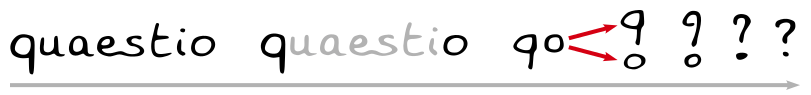

/join #ping-sameer on freenode for private commenting

tl;dr : Often , questions are prompts to calculations.
Say you re a vegitarian and circumstance are such that, you can't escape eating chicken.
Your focus is more likely to be at just get that over with, then on wondering or asking about the recipies,
the possible allergies, varieties ... like a connsiour would.
Say by a rare chance, you develop a taste for chicken, during your ordeal and
tried it a few more times, at random chances and whims, as you wanted to.
Now you ask some of those questions.
Then you further inquire, depending on the quality of answers you get.
It can also determine further random chances, required for you, be in the flow of
asking questions about it.
That s way of curiosity being ported to language.
Meta-Questions
Most of the time we ask same questions about different things
For the thematic structure of this Content
or nomenclature of the scenarios within
To weed out the bad "so whats" of a given investigation
Other than the theory backed observation or hypothesis backed analyses structure
Just some custom and hence non standard categories of questions usually asked, which are narrower
and hence keep the question hard mapped to the category and maintains clarity, by staying within the context
during a discourse .
This comes at the cost of more questions per categories instead of other way round.
This is just like the extra work of dissecting a mammoth topic in to sub-topic, and relating those sub-topics,
back to the mammoth. So that, one stays focused, as one keeps up with one sub-topic at a time.
This comes at the cost of extra definitions & relations or formula.
-
Crossword questions : just fill in the blanks in basic definitions, which are commonly overlooked until much
"advanced levels" of a topic.
-
Puzzles : make one seek obscure pattern in a mess, in order to be answered .
-
Riddles: make one infer obscure set of rules that somehow justify the patter, in order to be answered.
- Epistemology/Ontological questions: to counter loose vocab and bastardized terms, cultural constructs
-
Rhetorical questions : not worth the work time.
List can go on but you get the gist.
This is as helpful as, ability come up with the right word real time, in keeping a narrative nuanced and focused and escape
the effort in circumventing the issue.
It is critical, to have a process,gives a variant of root question , which is specific to one such customer categories.
Such that, together all the variants can represent the root questions and serve the purpose mentioned on the top.
Additionally,together all the root questions, need be able to represent the topic nearly completely.
References
Method of exhaustion Archimedes used in pre -calculus days
Analytic methods, that Descartes used to conjecture, that momentum and
K.E.should vary with first and second power of speed, w/o enough
Taylor and Hulse, nearly confirmed gravitational waves, without and
long before LEGO. It must have been convincing. Why else will some people still be skeptic of LEGO
Ward Leonard, Kramer systems, Scherbius controlled motors w/o and long
before transistors or Buckingham pi theorem deduced before CFD was
there
I know this is very much like matching the prediction[s] of various
Analytic methods and tools, to confirm a result about something,
without actually seeing it ever,as the tech to see it is yet to come.
But it is better than having nothing and waiting for tech to come.
This is like fixing a pipe with joints like flange or ferrule, when a weld joint is not possible.
Sometimes it can get us to tools like newton's rotating bucket, which
leaves us with more questions then before, but that is a minor pain
and risk, then not adopting any such process.
or how planes were designed in 20 th century w/o CAD
/* This text is in ~ */
.class {
font-family: ~,CenturyGothic,AppleGothic,sans-serif;
}
{Important C++ tip: If you die in the virtual destructor, you die in real life via somebody on twitter}